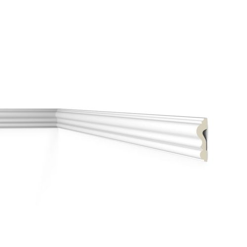
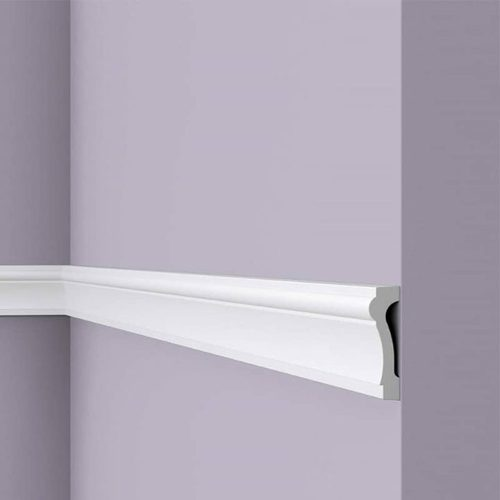
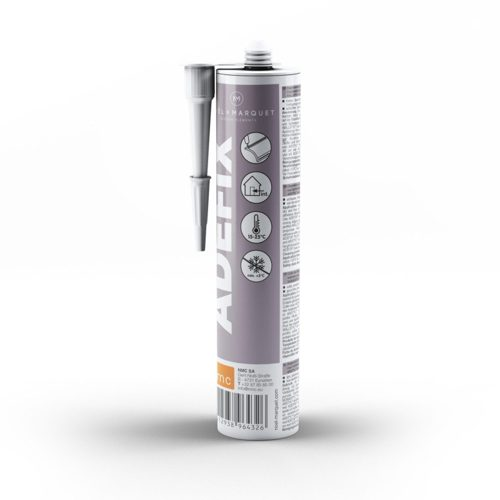

01 Wallstyl®Brâu WO2 pentru chenareCel mai accesibil mod de a desena chenare clasice.Vezi produsul
Wallstyl®Brâu WO2 pentru chenareCel mai accesibil mod de a desena chenare clasice.Vezi produsul
Chenare clasice în verde forest
Cea mai sigură alegere pentru un dining de sărbători: peretele din spatele mesei primește chenare din brâu WO2 sau Z1360, iar totul (perete și profile) se vopsește în același verde forest. Efectul ton-pe-ton e modern, iar umbrele profilelor dau relief fără să încarce.
- Împarte peretele în 2 sau 3 chenare verticale, aliniate cu axul mesei.
- Lasă 8–12 cm între chenare și față de colțuri: aerul dintre ele face eleganța.
- Pune un brâu WL6 la înălțimea spătarului scaunelor ca linie de separare, dacă tavanul trece de 2,70 m.
- Vopsește peretele și profilele în aceeași culoare, mat sau satinat.
Wallstyl®Brâu WO2 pentru chenareCel mai accesibil mod de a desena chenare clasice.Vezi produsul 
Arstyl®Brâu Z1360Profil subțire, pentru chenare fine și moderne.Vezi produsul
Wallstyl®Brâu WL6Linie orizontală la înălțimea scaunelor (chair rail).Vezi produsul
AdefixAdeziv ADEFIX 310 mlAdezivul pentru lipirea profilelor de interior.Vezi produsul